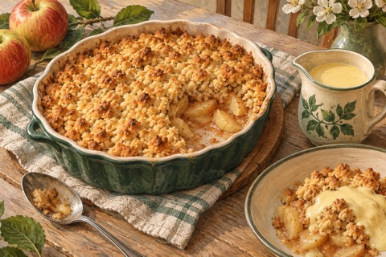

← Viikko 2 · Britannia
Sunnuntai / Jälkiruoka
Omenapaistos ja vaniljakastike
Omenoita voi-jauhomurun alla.

Ainekset
Määrät yhteensä 3 annokseen, myös lisukkeisiin ja mahdolliseen kasvisversioon. Vesi mainitaan valmistusohjeessa.
- Omena500 g
- Vehnäjauho90 g
- Voi50 g
- Sokeri55 g
- Jauhettu kaneli½ tl
- Valmis vaniljakastike300 ml
Valmistus
Lämpötilat ovat kiertoilmauunille. Käytä tavallisessa uunissa noin 20 °C korkeampaa lämpötilaa.
- Lämmitä kiertoilmauuni 180 asteeseen. Poista omenoista siemenkodat ja viipaloi. Laita pieneen uunivuokaan 20 g sokerin, kanelin ja 30 ml:n vettä kanssa.
- Nypi kylmä kuutioitu voi jauhoihin murumaiseksi seokseksi. Lisää loput 35 g sokeria. Ripottele omenoiden päälle painamatta pintaa tiiviiksi.
- Paista 30–35 minuuttia, kunnes omenat ovat pehmeitä ja pinta kullanruskea. Anna vetäytyä 5 minuuttia.
- Lämmitä vaniljakastike pakkauksen ohjeen mukaan ja tarjoa kolmen paistosannoksen kanssa.
Kypsymisaika riippuu laitteista ja ainesten koosta. Kypsennysohjeet (englanniksi): tarkista ohjeessa mainittu sisälämpötila puhtaalla paistomittarilla.